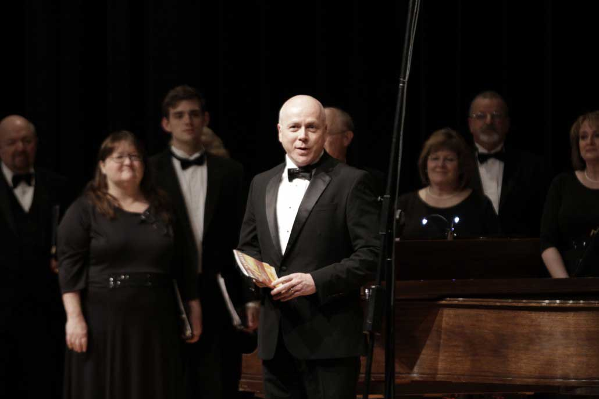

About Us
Mission Statement
Called together by our love of singing, the Springfield Mid-America Singers are devoted to enriching the community through excellence in choral music. Our central goals include involving people in choral music as a community, teaching singing as a life-long activity, and artistically expressing and uplifting the human spirit through choral music.
Our Conductor - Tom Matrone
Tom Matrone has been the Artistic Director for the Springfield Mid America Singers since September 2011. A graduate of Northwest College (B.A., Biblical Studies) and Drake University (Master of Music, Choral Conducting), and presently a Doctoral candidate in Choral Conducting at the University of South Carolina.
Matrone presently holds the position of Director of Choral Studies at Evangel University where he conducts the Evangel University Chorale, the Evangel University Chorus, and teaches Choral Conducting, Choral Materials, Church Music History, Hymnology and Worship Studies in Leadership.
Matrone has also been a minister of music for the past 36 years with the Assemblies of God Fellowship envisioning bridging the gap between traditional and contemporary worship formats in church music. Since 1996, Matrone has been the Music Director at Central Assembly of God in Springfield, MO.
In addition to his teaching and church staff responsibilities, Matrone is a Consultant to the National Leadership Resource Department of the Assemblies of God as a liaison to music pastors and district music directors throughout the United States. Matrone has been guest conductor and seminar speaker at the local level as well as nation and international platforms in the United States, Canada, South Africa, Asia, and Europe.